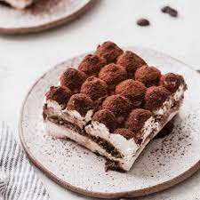

Tiramisu
lasagna

Description
an Italian dessert consisting of layers of sponge cake soaked in coffee and brandy or liqueur with powdered chocolate and mascarpone cheese.
Ingredients
- Sponge cake
- Coffee
- Brandy
- Powdered chocolate
- Sugar
Steps
- Put the double cream, mascarpone, marsala and golden caster sugar in a large bowl
- Whisk until the cream and mascarpone have completely combined and have the consistency of thickly whipped cream.
- Pour the coffee into a shallow dish. Dip in a few of the sponge fingers at a time, turning for a few seconds until they are nicely soaked, but not soggy.
- Layer these in a dish until you’ve used half the sponge fingers, then spread over half of the creamy mixture.